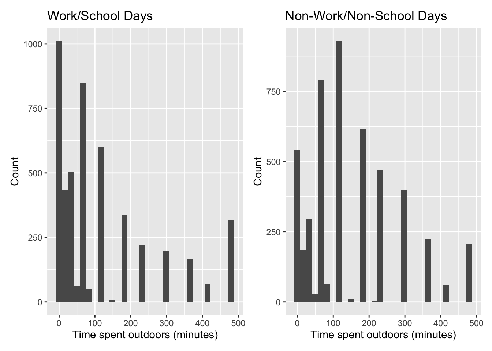
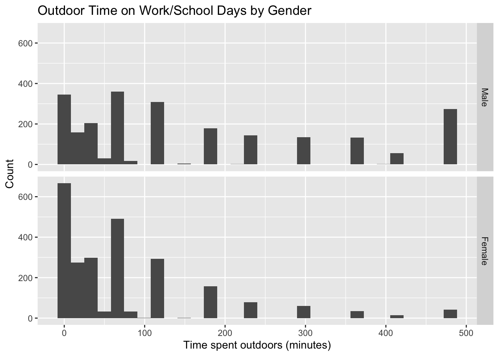
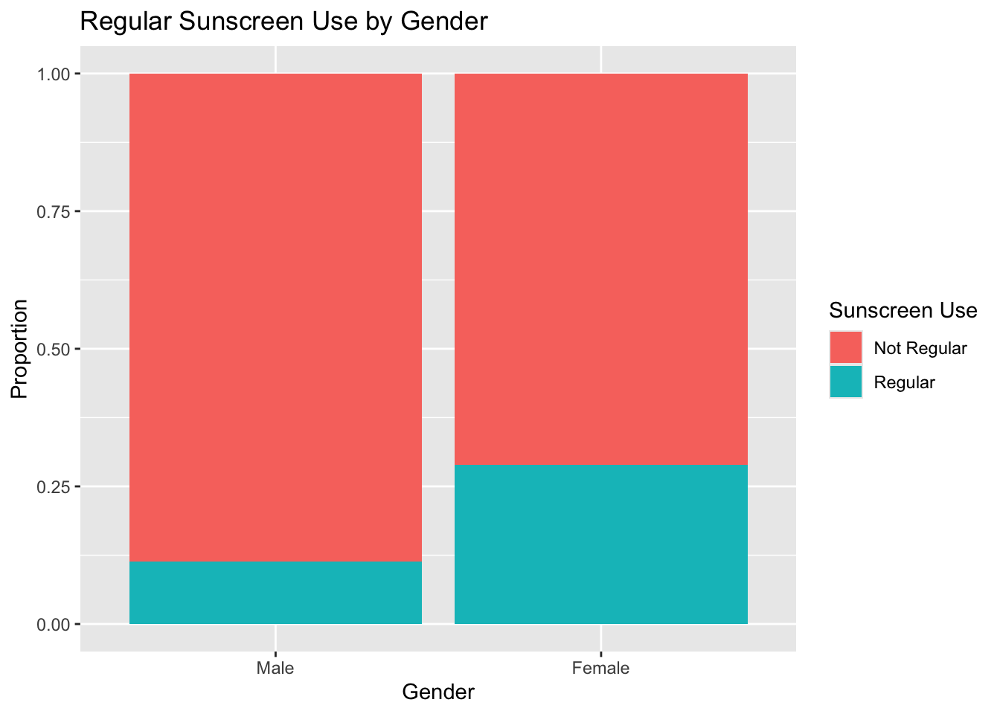
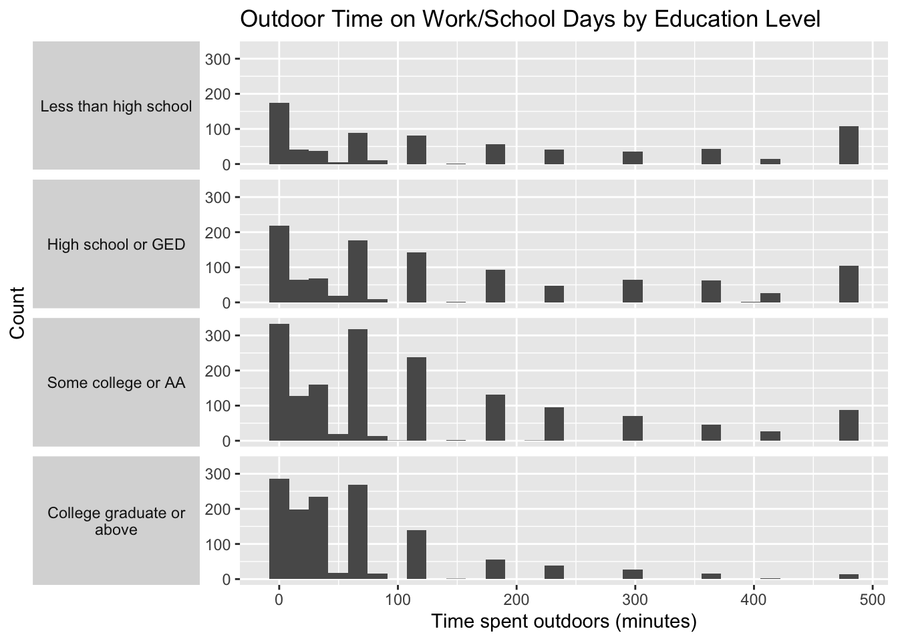

#Install necessary packages
knitr::opts_chunk$set(comment = NA)
#install.packages(c("tidyverse","janitor","knitr","magrittr","broom","naniar","patchwork"))
#install.packages("haven")
#install.packages("nhanesA")
library(nhanesA)
library(haven)
library(janitor)
library(knitr)
library(magrittr)
library(broom)
library(naniar)
library(patchwork)
library(tidyverse)
#Download raw datasets from P_DEMO, P_DEQ, and P_OCQ
#getwd()
#file.exists("data/P_DEMO.xpt")
demo_raw <- read_xpt("data/P_DEMO.xpt")
deq_raw <- read_xpt("data/P_DEQ.xpt")
ocq_raw <- read_xpt("data/P_OCQ.xpt")
#Select relevant variables in datasets
demo <- demo_raw %>%
select(SEQN, RIDSTATR, RIDAGEYR, RIAGENDR, RIDRETH3, DMDEDUC2)
deq <- deq_raw %>%
select(SEQN,DED120, DED125, DEQ034D)
#Merge and define necessary data
sun_raw <- demo %>%
left_join(deq, by = "SEQN")
sun <- sun_raw %>%
filter(
RIDSTATR == 2,
RIDAGEYR >= 20,
RIDAGEYR <= 59
)Sun Exposure and Sun Protection Behaviors In Adults Ages 20-59
1 Setup and Data Ingest
2 Cleaning the Data
# Data Cleaning.
#Deduct anything that corresponds to Refused to answer (7 or 7777), Don't know (9 or 9999), and Does not work for DED120 (3333)
sun_clean <- sun %>%
mutate(
DMDEDUC2 = replace(
DMDEDUC2,
DMDEDUC2 %in% c(7, 9),
NA
),
DEQ034D = replace(
DEQ034D,
DEQ034D %in% c(7, 9),
NA
),
DED120 = replace(
DED120,
DED120 %in% c(3333, 7777, 9999),
NA
),
DED125 = replace(
DED125,
DED125 %in% c(3333, 7777, 9999),
NA
)
)
#Create useful categories
sun_clean <- sun_clean %>%
mutate(
gender = factor(
RIAGENDR,
levels = c(1, 2),
labels = c("Male", "Female")
),
race_ethnicity = factor(
RIDRETH3,
levels = c(1, 2, 3, 4, 6, 7),
labels = c(
"Mexican American",
"Other Hispanic",
"Non-Hispanic White",
"Non-Hispanic Black",
"Non-Hispanic Asian",
"Other Race - Including Multi-Racial"
)
),
education = case_when(
DMDEDUC2 %in% c(1, 2) ~ "Less than high school",
DMDEDUC2 == 3 ~ "High school or GED",
DMDEDUC2 == 4 ~ "Some college or AA",
DMDEDUC2 == 5 ~ "College graduate or above",
TRUE ~ NA_character_
),
education = factor(
education,
levels = c(
"Less than high school",
"High school or GED",
"Some college or AA",
"College graduate or above"
)
),
sunscreen = factor(
DEQ034D,
levels = c(1, 2, 3, 4, 5),
labels = c(
"Always",
"Most of the time",
"Sometimes",
"Rarely",
"Never"
)
),
regular_sunscreen = case_when(
DEQ034D %in% c(1, 2) ~ "Regular",
DEQ034D %in% c(3, 4, 5) ~ "Not Regular",
TRUE ~ NA_character_
),
regular_sunscreen = factor(
regular_sunscreen,
levels = c("Not Regular", "Regular")
)
)
sun_clean <- sun_clean %>%
rename(
outdoor_workday = DED120,
outdoor_nonworkday = DED125
)
#Study 1 Final Tibble
#Assign only necessary catorgories to Study1 dataset, drop NA data and any unused categories
study1 <- sun_clean %>%
select(
SEQN,
RIDSTATR,
RIDAGEYR,
outdoor_workday,
outdoor_nonworkday,
gender,
education,
sunscreen,
regular_sunscreen
) %>%
drop_na() %>%
droplevels()3 Codebook and Data Description
##Code book
codebook <- tibble(
Variable = c(
"SEQN",
"outdoor_workday",
"outdoor_nonworkday",
"gender",
"education",
"sunscreen",
"regular_sunscreen"
),
Description = c(
"NHANES participant identifier",
"Minutes outdoors from 9am to 5pm on work or school days",
"Minutes outdoors from 9am to 5pm on nonwork or nonschool days",
"Gender",
"Education/degree status",
"Frequency of sunscreen use when outside on a very sunny day for more than 1hour",
"Regular sunscreen use, from always, most of the time to rarely and never"
),
Type = c(
"Identifier",
"Quant",
"Quant",
"Binary",
"Cat",
"Cat",
"Binary"
),
'Original Variable' = c(
"SEQN",
"DED120",
"DED125",
"RIAGENDR",
"DMDEDUC2",
"DEQ034D",
"DEQ034D"
)
)
codebook %>%
knitr::kable()| Variable | Description | Type | Original Variable |
|---|---|---|---|
| SEQN | NHANES participant identifier | Identifier | SEQN |
| outdoor_workday | Minutes outdoors from 9am to 5pm on work or school days | Quant | DED120 |
| outdoor_nonworkday | Minutes outdoors from 9am to 5pm on nonwork or nonschool days | Quant | DED125 |
| gender | Gender | Binary | RIAGENDR |
| education | Education/degree status | Cat | DMDEDUC2 |
| sunscreen | Frequency of sunscreen use when outside on a very sunny day for more than 1hour | Cat | DEQ034D |
| regular_sunscreen | Regular sunscreen use, from always, most of the time to rarely and never | Binary | DEQ034D |
#Analysis Table
study1# A tibble: 4,821 × 9
SEQN RIDSTATR RIDAGEYR outdoor_workday outdoor_nonworkday gender education
<dbl> <dbl> <dbl> <dbl> <dbl> <fct> <fct>
1 109266 2 29 30 60 Female College g…
2 109273 2 36 360 240 Male Some coll…
3 109284 2 44 240 300 Female Less than…
4 109286 2 33 60 120 Female College g…
5 109291 2 42 120 0 Female College g…
6 109292 2 58 0 0 Male High scho…
7 109293 2 44 120 240 Male High scho…
8 109295 2 54 0 60 Female Less than…
9 109297 2 30 0 120 Female Some coll…
10 109300 2 54 30 30 Female College g…
# ℹ 4,811 more rows
# ℹ 2 more variables: sunscreen <fct>, regular_sunscreen <fct>#Data Summary
study1 %>%
summarize(
n = n(),
age_mean = mean(RIDAGEYR),
age_sd = sd(RIDAGEYR),
age_min = min(RIDAGEYR),
age_max = max(RIDAGEYR),
workday_mean = mean(outdoor_workday),
workday_sd = sd(outdoor_workday),
workday_median = median(outdoor_workday),
workday_min = min(outdoor_workday),
workday_max = max(outdoor_workday),
nonworkday_mean = mean(outdoor_nonworkday),
nonworkday_sd = sd(outdoor_nonworkday),
nonworkday_median = median(outdoor_nonworkday),
nonworkday_min = min(outdoor_nonworkday),
nonworkday_max = max(outdoor_nonworkday)
) %>%
kable(digits = 1)| n | age_mean | age_sd | age_min | age_max | workday_mean | workday_sd | workday_median | workday_min | workday_max | nonworkday_mean | nonworkday_sd | nonworkday_median | nonworkday_min | nonworkday_max |
|---|---|---|---|---|---|---|---|---|---|---|---|---|---|---|
| 4821 | 39.6 | 11.5 | 20 | 59 | 117.5 | 139.7 | 60 | 0 | 480 | 151.1 | 126.8 | 120 | 0 | 480 |
#Turn data into percentages for easy intepretation
study1 %>%
tabyl(gender) %>%
adorn_pct_formatting(digits = 1) %>%
kable()| gender | n | percent |
|---|---|---|
| Male | 2346 | 48.7% |
| Female | 2475 | 51.3% |
study1 %>%
tabyl(education) %>%
adorn_pct_formatting(digits = 1) %>%
kable()| education | n | percent |
|---|---|---|
| Less than high school | 738 | 15.3% |
| High school or GED | 1098 | 22.8% |
| Some college or AA | 1671 | 34.7% |
| College graduate or above | 1314 | 27.3% |
study1 %>%
tabyl(sunscreen) %>%
adorn_pct_formatting(digits = 1) %>%
kable()| sunscreen | n | percent |
|---|---|---|
| Always | 394 | 8.2% |
| Most of the time | 590 | 12.2% |
| Sometimes | 1022 | 21.2% |
| Rarely | 903 | 18.7% |
| Never | 1912 | 39.7% |
study1 %>%
tabyl(regular_sunscreen) %>%
adorn_pct_formatting(digits = 1) %>%
kable()| regular_sunscreen | n | percent |
|---|---|---|
| Not Regular | 3837 | 79.6% |
| Regular | 984 | 20.4% |
study1 %>%
tabyl(RIDSTATR) %>%
kable()| RIDSTATR | n | percent |
|---|---|---|
| 2 | 4821 | 1 |
4 Data Analysis A
4.1 The Question
What does time spent outdoors between 9am and 5pm looks like on work or school days versus on non-work/ non-school days for adult ages 20-59?
This can be done by comparing the means of the time spend by the two groups. But two plots side-by-side woud better demonstrate how the time spent differs at each time interval.
4.2 Describing The Data
The variables we’re looking at are outdoor_workday and outdoor_nonworkday, which correspond to the time spent outdoors on work/ school days and the the time spent outdoors on nonwork/ school days. We want to see whether or not people spend more time outdoors when they don’t have school or work responsibilities.
4.3 Main Analysis
#Main Analysis: Histogram plots for time spent outdoors for the two groups.
#Plots
p1 <- ggplot(study1, aes(x = outdoor_workday)) +
geom_histogram(bins = 30) +
labs(
title = "Work/School Days",
x = "Time spent outdoors (minutes)",
y = "Count"
)
p2 <- ggplot(study1, aes(x = outdoor_nonworkday)) +
geom_histogram(bins = 30) +
labs(
title = "Non-Work/Non-School Days",
x = "Time spent outdoors (minutes)",
y = "Count"
)
p1 + p2
#Summary of mean and standard deviation of the two variables
study1 %>%
summarize(
workday_mean = mean(outdoor_workday),
workday_sd = sd(outdoor_workday),
nonworkday_mean = mean(outdoor_nonworkday),
nonworkday_sd = sd(outdoor_nonworkday)
) %>%
kable(digits = 1)| workday_mean | workday_sd | nonworkday_mean | nonworkday_sd |
|---|---|---|---|
| 117.5 | 139.7 | 151.1 | 126.8 |
study1 <- study1 %>%
mutate(
outdoor_difference = outdoor_nonworkday - outdoor_workday
)
study1 %>%
summarize(
mean_difference = mean(outdoor_difference),
sd_difference = sd(outdoor_difference)
) %>%
kable(digits = 1)| mean_difference | sd_difference |
|---|---|
| 33.6 | 146.6 |
#T-Test for Confidence Interval
tt_a <- study1 %$%
t.test(outdoor_difference, conf.level = 0.90)
tidy(tt_a) %>%
select(estimate, conf.low, conf.high) %>%
kable(digits = 1)| estimate | conf.low | conf.high |
|---|---|---|
| 33.6 | 30.1 | 37 |
4.4 Conclusion
More people tend to spend less time outdoors when they have school or work. A lot of people spend as much as 2 hours outdoors when they’re not working. On avereage, this comes close to 2.5 hours. The sample means tell us that the difference in time is about 34 minutes. Not many people spend more than 4 hours outside, regardless of whether they have work or school responsbilities. The t-test shows that the confidence interval in the means falls within 30.1 and 37 minute.
5 Data Analysis B
5.1 The Question
What does time spent outdoors between 9am and 5pm looks like on work or school days for female versus male participants?
This can be done by comparing the means of the time spend by the two groups. And two plots woud better demonstrate how the time spent differs for the two groups.
5.2 Describing The Data
The variables we’re looking at are outdoor_workday (time spent outdoors on work/ school days) for female and for male. We want to see if men spend more time outdoors than women do when they have school or work responsibilities.
5.3 Main Analysis
#Analysis B
#Main Analysis: Histogram plots for time spent outdoors for the two groups.
#Plots
study1 %>%
ggplot(aes(x = outdoor_workday)) +
geom_histogram(bins = 30) +
facet_grid(gender ~ .) +
labs(
title = "Outdoor Time on Work/School Days by Gender",
x = "Time spent outdoors (minutes)",
y = "Count"
)
#Summary of the means and standard deviations
study1 %>%
group_by(gender) %>%
summarize(
n = n(),
mean = mean(outdoor_workday),
sd = sd(outdoor_workday),
median = median(outdoor_workday),
min = min(outdoor_workday),
max = max(outdoor_workday)
) %>%
kable(digits = 1)| gender | n | mean | sd | median | min | max |
|---|---|---|---|---|---|---|
| Male | 2346 | 162.2 | 161.1 | 120 | 0 | 480 |
| Female | 2475 | 75.2 | 98.8 | 40 | 0 | 480 |
#T-Test for Confidence Interval
tt_b <- t.test(
outdoor_workday ~ gender,
data = study1,
conf.level = 0.90
)
tt_b
Welch Two Sample t-test
data: outdoor_workday by gender
t = 22.465, df = 3852.9, p-value < 2.2e-16
alternative hypothesis: true difference in means between group Male and group Female is not equal to 0
90 percent confidence interval:
80.64643 93.39227
sample estimates:
mean in group Male mean in group Female
162.20844 75.18909 tidy(tt_b) %>%
select(estimate1, estimate2, estimate, conf.low, conf.high) %>%
kable(digits = 1)| estimate1 | estimate2 | estimate | conf.low | conf.high |
|---|---|---|---|---|
| 162.2 | 75.2 | 87 | 80.6 | 93.4 |
5.4 Conclusion
Conclusion: The results show that men typically spend more time outdoors than women do on work/school days. There’s a considerable amount of men who spend up to 8 hours (around 480 minutes) outdoors. On average, men spend 162 minutes (estimate1) outdoors while women spend around 75 minutes (estimate2). The difference on time spent by the two groups is 87 minutes (estimate). The 90% confidence interval for the population mean is from 80.6 to 93.4 minutes.
6 Data Analysis D
6.1 The Question
How does regular sunscreen use differ between male and female adults ages 20 to 59?
This can be done by comparing the regular sunscreen use between the two genders, using the variable regular_sunscreen in each category in gender.
6.2 Describing The Data
The variables we’re looking at are regular_sunscreen (regular sunscreen use) between two gender groups (female vs male). Then, we look at the Risk difference to asnwer magnitude in the difference between the two groups. Then, Relative risk will tell us the ratio between the differnce, and Odss ratio result will tell us about the odds of regular use of sunscreen between the two groups.
6.3 Main Analysis
#Analysis D
#Main Analysis: Stacked bar plots will show the difference in regular sunscreen use in female and male participants. The percentage of regular sunscreen use is calculated for the two groups.
study1 %>%
tabyl(gender, regular_sunscreen) gender Not Regular Regular
Male 2079 267
Female 1758 717study1 %>%
tabyl(gender, regular_sunscreen) %>%
adorn_percentages("row") %>%
adorn_pct_formatting(digits = 1) gender Not Regular Regular
Male 88.6% 11.4%
Female 71.0% 29.0%#Plot
ggplot(
study1,
aes(x = gender, fill = regular_sunscreen)
) +
geom_bar(position = "fill") +
labs(
title = "Regular Sunscreen Use by Gender",
x = "Gender",
y = "Proportion",
fill = "Sunscreen Use"
)
#Calculations of Risk difference, Relative risk, and Odds ratio
#Risk difference
female_risk <- 717 / 2475
male_risk <- 267 / 2346
risk_difference <- female_risk - male_risk
risk_difference[1] 0.1758862#Relative risk
relative_risk <- female_risk / male_risk
relative_risk[1] 2.545427#Odds ratio
female_odds <- 717 / 1758
male_odds <- 267 / 2079
odds_ratio <- female_odds / male_odds
odds_ratio[1] 3.17573tibble(
Measure = c(
"Risk Difference",
"Relative Risk",
"Odds Ratio"
),
Estimate = c(
risk_difference,
relative_risk,
odds_ratio
)
) %>%
kable(digits = 2)| Measure | Estimate |
|---|---|
| Risk Difference | 0.18 |
| Relative Risk | 2.55 |
| Odds Ratio | 3.18 |
6.4 Conclusion
The results show that 29% of female and 11.4% of male participants reported having regular sunscreen use. The risk difference tells us that regular sunscreen use is 18% higer in women than it is is men. The relative risk tells us that the proportion of having regular sunscreen use is 2.55 higher for females than it is for males. The odds of using sunscreen regularly is 3.18 times for women.
7 Data Analysis C
7.1 The Question
How does the time spent outdoors on work/school days differ across education levels among adutls ages 20-59?
This can be done by comparing outdoor_workday across the 4 education levels: less than highschool, high school or GED, some college or AA, and college graduate or above.
7.2 Describing The Data
The variables we’re looking at are outdoor_workday (minutes spent outdoors from 9am to 5pm) and education. We compare the means in outdoor time across these groups. The linear model is then used to estiamte differences in the means of outdoor time, using less than high school as the reference group.
7.3 Main Analysis
#Analysis C
#Main Analysis: Histograms are used to compare the outdoor time spent across 4 education level. Then, the linear model will calculate the 90% condifence interval for the difference in the mean of outdoor time across 4 groups.
study1 %>%
ggplot(aes(x = outdoor_workday)) +
geom_histogram(bins = 30) +
facet_grid(
education ~ .,
labeller = label_wrap_gen(width = 25),
switch = "y"
) +
labs(
title = "Outdoor Time on Work/School Days by Education Level",
x = "Time spent outdoors (minutes)",
y = "Count"
) +
theme(
strip.placement = "outside",
strip.text.y.left = element_text(angle = 0)
)
#Summary of stats
study1 %>%
group_by(education) %>%
summarize(
n = n(),
mean = mean(outdoor_workday),
sd = sd(outdoor_workday),
median = median(outdoor_workday),
min = min(outdoor_workday),
max = max(outdoor_workday)
) %>%
kable(digits = 1)| education | n | mean | sd | median | min | max |
|---|---|---|---|---|---|---|
| Less than high school | 738 | 165.2 | 171.9 | 120 | 0 | 480 |
| High school or GED | 1098 | 149.2 | 156.5 | 90 | 0 | 480 |
| Some college or AA | 1671 | 116.5 | 132.3 | 60 | 0 | 480 |
| College graduate or above | 1314 | 65.5 | 86.8 | 30 | 0 | 480 |
#Linear model comparing mean outdoor time across education levels
education_model <- lm(outdoor_workday ~ education, data = study1)
tidy(education_model, conf.int = TRUE, conf.level = 0.90) %>%
select(term, estimate, conf.low, conf.high) %>%
kable(digits = 1)| term | estimate | conf.low | conf.high |
|---|---|---|---|
| (Intercept) | 165.2 | 157.1 | 173.4 |
| educationHigh school or GED | -16.0 | -26.6 | -5.4 |
| educationSome college or AA | -48.7 | -58.5 | -38.9 |
| educationCollege graduate or above | -99.7 | -109.9 | -89.5 |
7.4 Conclusion
The distribution is skewed to the right for all the groups. Those with high school degrees or less spend as much as 8 hours outdoors during work/school days. Mean time spent outdoors for participants with less than a high school degree is highest (162 minutes), while it is lowest for those with college degree or above (65 minutes). The linear model shows lower mean outdoor time for the other education groups compared with the group with less than a high school degree. Higher education levels are associated with lower time spent outdoors during work/school days.
8 Final Section
xfun::session_info()R version 4.6.1 (2026-06-24)
Platform: aarch64-apple-darwin23
Running under: macOS Tahoe 26.6.2
Locale: en_US.UTF-8 / en_US.UTF-8 / en_US.UTF-8 / C / en_US.UTF-8 / en_US.UTF-8
Package version:
askpass_1.2.1 backports_1.5.1 base64enc_0.1.6
bit_4.6.0 bit64_4.8.6 blob_1.3.0
broom_1.0.13 bslib_0.12.0 cachem_1.1.0
callr_3.8.0 cellranger_1.1.0 cli_3.6.6
clipr_0.8.1 compiler_4.6.1 conflicted_1.2.0
cpp11_0.5.5 crayon_1.5.3 curl_8.0.0
data.table_1.18.6.1 DBI_1.3.0 dbplyr_2.6.0
digest_0.6.39 dplyr_1.2.1 dtplyr_1.3.3
evaluate_1.0.5 farver_2.1.2 fastmap_1.2.0
fontawesome_0.5.3 forcats_1.0.1 foreign_0.8-91
fs_2.1.0 gargle_1.6.1 generics_0.1.4
ggplot2_4.0.3 glue_1.8.1 googledrive_2.1.2
googlesheets4_1.1.2 graphics_4.6.1 grDevices_4.6.1
grid_4.6.1 gridExtra_2.3.1 gtable_0.3.6
haven_2.5.5 highr_0.12 hms_1.1.4
htmltools_0.5.9 htmlwidgets_1.6.4 httr_1.4.8
ids_1.0.1 isoband_0.3.0 janitor_2.2.1
jquerylib_0.1.4 jsonlite_2.0.0 knitr_1.52
labeling_0.4.3 lifecycle_1.0.5 lubridate_1.9.5
magrittr_2.0.5 memoise_2.0.1 methods_4.6.1
mime_0.13 modelr_0.1.11 naniar_1.1.0
nhanesA_1.4.1 norm_1.0.11.1 openssl_2.4.2
otel_0.2.0 patchwork_1.3.2 pillar_1.11.1
pkgconfig_2.0.3 plyr_1.8.9 prettyunits_1.2.0
processx_3.9.0 progress_1.2.3 ps_1.9.3
purrr_1.2.2 R6_2.6.1 ragg_1.5.2
rappdirs_0.3.4 RColorBrewer_1.1-3 Rcpp_1.1.2
readr_2.2.0 readxl_1.5.0 rematch_2.0.0
rematch2_2.1.2 reprex_2.1.1 rlang_1.3.0
rmarkdown_2.31 rstudioapi_0.19.0 rvest_1.0.5
S7_0.2.2 sass_0.4.10 scales_1.4.0
selectr_0.6.0 snakecase_0.11.1 stats_4.6.1
stringi_1.8.9 stringr_1.6.0 sys_3.4.3
systemfonts_1.3.2 textshaping_1.0.5 tibble_3.3.1
tidyr_1.3.2 tidyselect_1.2.1 tidyverse_2.0.0
timechange_0.4.0 tinytex_0.60 tools_4.6.1
tzdb_0.5.0 UpSetR_1.4.1 utf8_1.2.6
utils_4.6.1 uuid_1.2.2 vctrs_0.7.3
viridis_0.6.5 viridisLite_0.4.3 visdat_0.6.1
vroom_1.7.1 withr_3.0.3 xfun_0.61
xml2_1.6.0 yaml_2.3.12